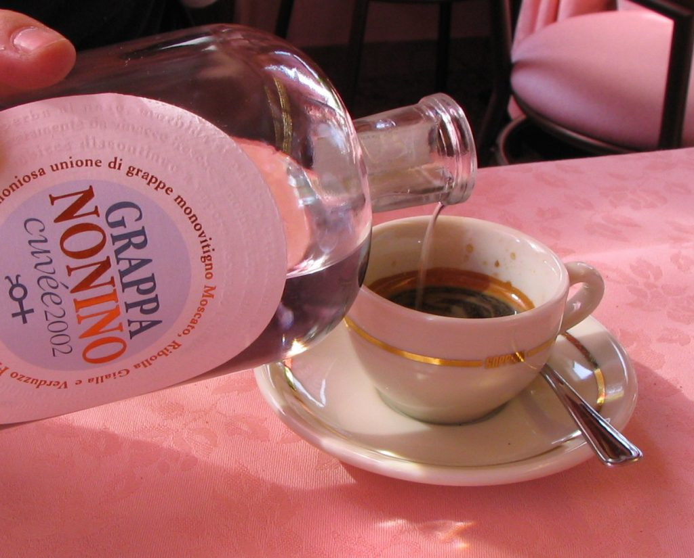

Caffè corretto con Grappa
At the end of the meals and after the dessert (and not with it), Italians drink coffee, either a caffè espresso (or simply caffè), or a caffè corretto, which is an espresso with a shot of liquor. Italians don’t use half and half in their coffee. Some Italians take the digestivo (digestive liquor) or amaro to help their stomach deal with such a large amount of food it has to work on. The digestivo (served in small, two-inch-tall glasses) is a bitter liquor made of herbs. In many restaurants, especially in northern Italy, people also drink grappa, which is a very strong liquor made from grape skins (see above). {This is an excerpt from chapter 3 “ Italian cuisine and food establishments” of the eBook “Italy from the Inside. A native Italian reveals the secrets of traveling in Italy”. Buy our eBook on Amazon and leave us a review! If it’s good, you’ll make us happy, if it’s bad, you’ll make us improve. Thank you either way!}